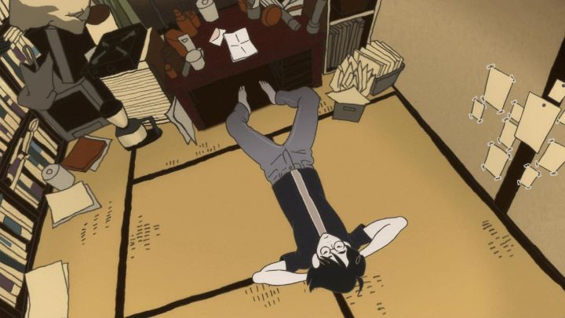

One would think that any anime with even a small following would be guaranteed a physical release on disc outside of Japan... despite the prevailiance of online streaming (this review was written in 2019). Much like manga, there are so many anime in production, most without the slightest hint of fan interest, so having even a few people mention it would make it a better opportunity that most. However, when "The Tatami Galaxy" was licensed by American company Funimation for streaming in 2010, it remained there, and for years remained one of the very first shows the company paid a license for, but never bothered to dub or release. And they themselves admitted, they simply felt it wouldn't sell well enough to jusitfy a physical printing.Fast-forward almost a decade later: the show's auteur director, Masaaki Yuasa, has become a celebrated name in the animation field for his unique art direction and story-telling interests. Already with an impressive resume of works, he opened is own studio, releasing the show "Devilman - Crybaby" and film "Night is Short, Walk on Girl" to great acclaim. Slowly, companies began picking up his older forgotten shows and films. Fans continued to beg for "Tatami." And finally, in 2019, not long after similarly releasing another forgotten masterpiece ("Nichijou"), Funimation announced a Bluray/DVD release for "The Tatami Galaxy," with 1080i video.... wait, 1080i? Not 1080p? I can't confirm the video encoding on the disc, but there is a bit of a lack of sharpness, although that could be attributed to the original show's production. Curiously, the opening and ending credits also lack English subtitles for the music, an issue I've never seen before with Funimation's home video releases, but have seen with their online streaming. I highly suspect that Funimation still had the home video rights without further payment owed, perhaps due to expire in 10 years (less than a year from the eventual release), and that the corporation either didn't know who to contact to get the best video material in Japan after so much time had passed, or didn't care to bother, and instead just put the original online stream onto the disc. Speculation aside, I'd be happy with a VHS tape at this point. It's on my shelf now, that's all that matters.And is "The Tatami Galaxy" worth all the hype it's received from niche anime fans? It's distinctively Yuasa's work, and might be one of his most divisive. It's art style is bold and experimental, but also bewildering. Words are spoken in at least a dozen per second, with more subtitles in a single episode than most anime seasons get, with subtle visual jokes that the viewer will no doubt miss due to reading. I once thought "Bakemonogatari" was the worst contender to try to dub, but "The Tatami Galaxy" bests it out of sheer volume of words. And the bizarre story (if you could call it a story) is a far cry from any other anime I've seen. There's no easy way to market this show, inside or outside Japan. And I don't think Funimation even tried: they didn't even bother to make a quick trailer for the release on their social media accounts, which might be a first; they're relying on the discs to sell by cult status and word of mouth alone. And I don't think I could have done things any differently.In the first episode, we meet the Protagonist (who remains un-named), a college student. By chance, he meets a mysterious character who claims to be a God, and states that a girl of his acquaintance named Akashi will either be destined to love the Protagonist or another student named Ozu; the God hasn't decided yet. The lead character only has slight feelings for the girl, but due to a complex hatred for Ozu, he insists to be the chosen one to prevent him from either taking advantage of Akashi, or simply being happy himself. Just as the lead is about to confess his love to Akashi, an incident occurs that ruins the opportunity, and he ponders the regretful choices he made in his life: the first episode ends, and we watch it all play out again in the next episode. And the next."The Tatami Galaxy" is effectively "Groundhog Day" from the perspective of a Japanese college student. At the beginning of each episode, we see it start from scratch: the Protagonist entering the college for the first time, excited for his "rose-colored campus life" to begin. He picks a random club to join, ranging from the film club, to a cycling club, to a cult posing as a softball club, but struggles to socially fit in. Inevitably, he meets Ozu, a pale, unhealthy-looking teenager that resembles a nasty Yokai; Ozu becomes his best friend, and tricks him into pulling a series of pranks that further ruin his own life. They ignore their studies for the sake of club activities, and two years of college pass before every episode is through. In each episode, he meets and re-meets a fortune teller that strongly hints that Akashi, a cute but unsocialable engineering student, might be a key to his happiness (a recuring joke is that she sets a higher price with each subsequent episode). But due to Ozu, he fails, and ends each episode in misery. Or perhaps, the Protagonist is really at fault each time?This isn't the first time we've had the "repeating loop" mechanic used in storytelling media, or even in anime. "Haruhi Suzumiya" had it. "Steins;Gate" had it. A few anime based on visuals novels with branching paths had it. But there's also a reason why it isn't more common: it's difficult to pull off in a convincing way. In "The Tatami Galaxy," the Protagonist isn't really aware that time is repeating, and therefore fails to learn from his actions. He doesn't learn, and the viewer doesn't learn much either. Fairly quickly, the show can become a little tedious. One of the biggest issues of the show makes things even worse: the characters aren't particularly likable. ANY of them. The Protagonist himself is a stereotypical Asian college man, skinny and pale, in a messy shirt and sandals everywhere he goes. He's impatient and selfish and dense. Clearly, he's meant to be the type of lead character that is purposely flawed, with the intent that he learns by the end. And he does... but after nine episodes of him himself not knowing that he's repeating his mistakes, the journey isn't all that statisfying until the end. Ozu is a mischievous scoundrel, constantly double-crossing the Protagonist and everyone else around him, seemingly for entertainment or for some other unspoken motive. Every other character has their own quirks that make them equally atrocious: some of lazy, some of drunkards, and a handful are secretly perverts and pedophiles using positions of power for their own gain. The only character that is remotely likable is Akashi, the potential love interest who seems to increasingly become irrelevant in the story. She isn't a typical love interest: she's a talented engineer, likes to read, and doesn't dress herself to attract suitors or even socially blend in. She's quiet, and aggresively defensive whenever someone tries to talk to her. She's also afraid of moths, resulting in a very cute reaction whenever one appears. She's refreshingly real, not polished to be on a pedestal, and yet not with any significantly distgusting traits like everyone around her. It sounds like the story is a bit of a mess to watch, but thankfully, Yuasa's direction and the writing of the original novel's author (Tomihiko Morimi) keeps the show alive and virbrant. Despite repeating the same time loop, every episode is surprisingly different, enough so that the repeated similarities are a fun distraction rather than an obvious trait. Humorous and philosophical statements come in every scene, with clever reflections and characterizations that make you question character motives and sexualities. Even when I finished an episode, with the impression that I hadn't really progressed (much like the Protagonist), I still felt compelled to watch the next one to see if another path would lead us to the ending. Tiny hints are left to show a larger complex web of the events that transpire. Eventually, we get to the final two episodes that give us the bigger picture: of course, it brings the lead to the obvious realization that "there is no such thing as a rose-colored campus life," but in the moment, it felt honest and satisfying, a moral that most any socially-awkward teenager or young adult could appreciate. The metaphor of the Japanese-style tatami-mat apartment makes sense of some of the more experimental imagery.I can't help but compare the series to the 2017 feature film "Night is Short, Walk on Girl." That was a spin-off story, based on a novel by the same writer. It happens to feature the same characters (if including "Tatami"'s short OVAs, included on the discs, all of the film's characters are at least mentioned in the series: the "Night is Short" novel itself even makes a brief appearance in the series!), but with slightly different appearances and personalities and motivations. Akashi is much more outgoing and optimistic, and the worst traits of its characters are cut out due to time. The movie takes place over the course of a single night during its two hours, instead of two years in a single episode. The movie's funnier. It has a better ending. In fact, the movie is better than this series in almost every: if I had to recommend only one of the two, I would recommend "Night is Short" in a heartbeat. It could also be that my reverse-watching order spoiled my enjoyment of "The Tatami Galaxy" when I finally got around to it.Character designs and backgrounds and color palettes are distinct, and barely resemble anime. The animation itself is minimalistic, likely due to targeting an audience that cared more for the story rather than flashy style. Mixed media, including live-action, stop-motion and CGI, often overlayed with 2D characters, is used, but used rarely enough that it can seem out of place, despite the art-house brillance of it. The visuals aren't quite as good as the DVD-jacket designs though: those are worthy of a poster. The opening and ending themes feel like cerebrial 70's pop songs, and aside from a light jazz score that sometimes appears, I never felt the music made enough of a strong impact to match either the story or the visuals. The Japanese-only dialogue track is about as good as it can be... characters speak so quickly, it's hard to judge. By the end, I feel a lot like the Protagonist. Like his feelings towards Ozu, I don't know if I love or hate "The Tatami Galaxy." It is both one of the smartest anime I've watched, and also one of the most self-centered. I never liked the term "self-masturbation" being applied to art or film (usually when a director or writer makes what they like, chosing to be ignorant of any potential audience), but that's what watching this series felt like: it was always pre-occupied with it's own story to ignore what it was telling. Even so, if you have already watched and enjoyed the anime series or films "Bakemonogatari" and "Night is Short, Walk on Girl," then this is the obvious next series to add to your collection as a nice aside. Regardless of my overall feelings, the ending did succeed in, more than any other anime has (despite being a common theme), making me wonder if I was just wasting time staying indoors watching anime all the time. I really should take the opportunity in front of me, and go outside.
- "Ani" More reviews can be found at : https://2danicritic.github.io/ Previous review: review_The_Tale_of_Princess_Kaguya Next review: review_The_Thief_and_the_Cobbler